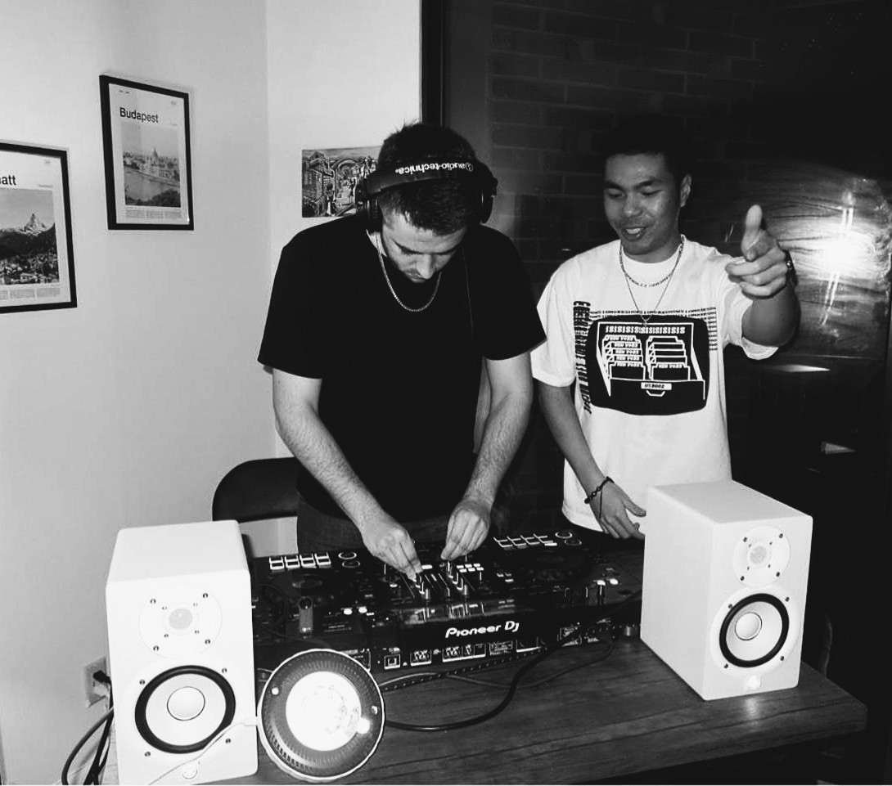

From Wikipedia: The Lyon-Meudon Extragalactic Database (LEDA) was a database of galaxies, created in 1983 at the Lyon Observatory.
Since 2024 I have been actively DJing in the Connecticut area. I am a huge fan of most genres in the EDM scene, ranging anywhere from deep and progressive house (Anjuna is my favourite label) all the way to industrial techno.
I love DJing as a craft because it provides me an avenue to think more deeply about music. In a sense, I feel like it allows me to see music "in an extra dimension", as you are constantly considering what songs would work well with each other.
I am also working on music projects in my spare time. I work mostly with Ableton, but I've become increasingly interested in the AlgoRave side of things (think SonicPI and Tidal Cycles). It's the kind of craft that scratches both the DJ itch and the programming itch.

I am open to doing most gigs, so if you're interested please get in touch!